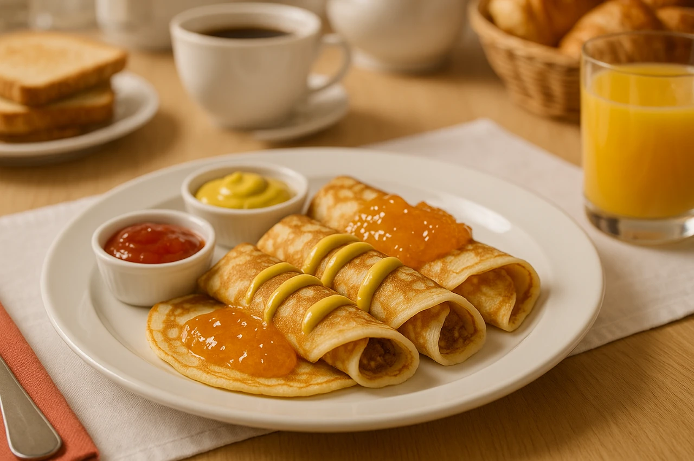
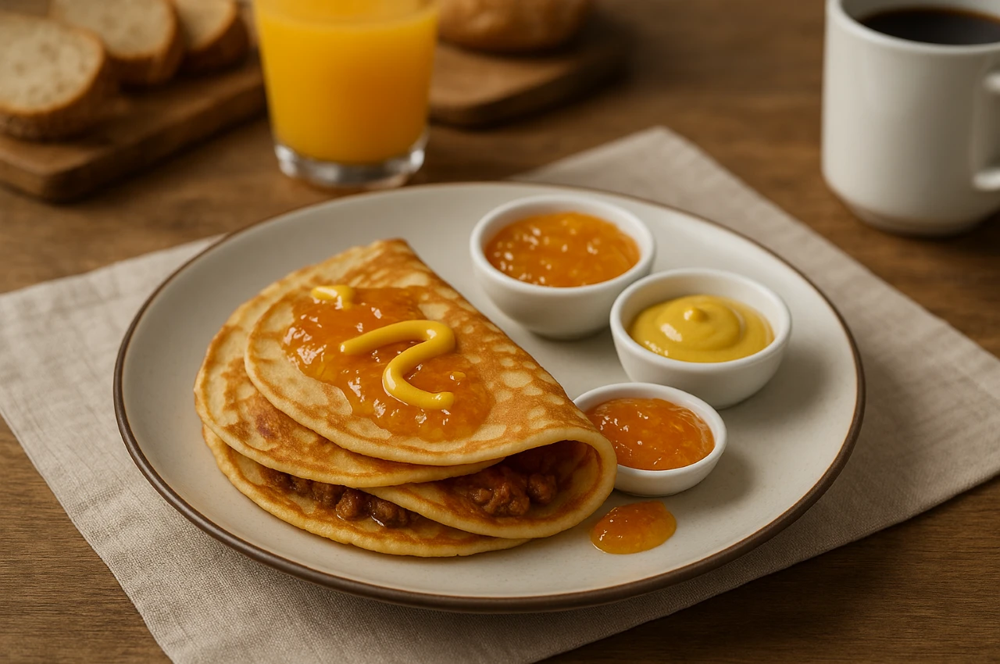

Senap och apelsinmarmelad-pannkakor
En livlig kombination där skarp senap möter söt, citrusfrisk marmelad. Resultatet är en överraskande smakresa med både hetta och fräschör – perfekt för den som vill pröva pannkakor med karaktär.
Ingredienser
- 3 dl vetemjöl
- 6 dl mjölk
- 3 ägg
- 1 msk smör
- 4 msk stark senap
- 4 msk apelsinmarmelad
Så här gör du
- Stek pannkakor.
- Blanda senap och marmelad.
- Bred på pannkakorna och vik ihop.
Serveringsförslag
- 
- 